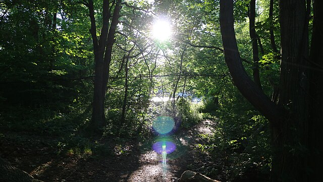

The Benefits of Traveling
Before we jump in to the amazing examples I have prepared for you,
I believe it is common courtesy to just generally explain why travel is beneficial.
- Broadens your horizon
- Boosts mental health
- Provides a sense of adventure
- Reduces stress
- Increased Vitamin D Intake due to Sun exposure

If you thought that was just common sense, I agree. So, if you were to ask me on a deeper level, what is travel for you? I believe It can be anything: a getaway from your current position, a lighthearted break, a breath of fresh air, a period of sorrow, or even a therapeutic self-healing journey. To me it's a light heardted break.
At the end, I ask you to share your thoughts on one of three questions, "what is travel to you?" is one of them. Responses are anonymous, so feel free to express yourself fully.